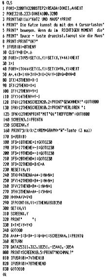

80-Bus Journal |
Februar 1983 · Ausgabe 2 |
Peter Brendel hat es wieder fertiggebracht, die eigentlich bescheidenen grafischen Möglichkeiten des Nascom optimal zu nutzen. Herausgekommen sind diesmal zwei sehr amüsante Bildschirm-Spiele.
Es ist auch gelungen, die ‚Inkey-Routine‘ so zu gestalten, daß sie eigentlich mit jeder BASIC-Version laufen müßte. (Zumindest läuft sie mit unserer ‚Minderheitenversion‘ auch).

10 R=INT(RND(1)*25) 20 CLS 30 DOKE 3200,25311 40 DOKE 3202,312 50 DOKE 3204,18351
60 DOKE 3206,-15441 70 DOKE 3208,-3854 80 POKE 3210,233:DOKE4100,3200 90 PRINTTAB(15)"M A L O C H E" 95 PRINT:PRINTTAB(8)"Kein Spiel fuer Nervenbuendel" 100 PRINT:PRINTTAB(8)"brauchst du Instruktionen?" 120 FOR J=1 TO 800:S=USR(0):IF S=74 THEN 640 130 NEXT 140 Z=1:Q=0:CLS:GOSUB 500 150 P=2143:E=23:D=1 160 SCREEN 18,2:PRINT" " 170 SCREEN1,2:PRINTQ;:PRINT" Stck richtig":EN=EN-5 180 IF Z>50THENPRINT"ENDE nochmal?":GOTO 610 190 SCREEN1,1:PRINTZ;:PRINT". Ware":Z=Z+1 200 FOR I=1 TO 7:POKE P,I+48:POKEP+E,220+I+R 210 P=P+126:E=E+2:NEXT 220 G=INT(RND(1)*7)+221+R:P=2891 230 POKE P,G:FOR I=1 TO EN:S= USR(0)-48 240 IF S>0 THEN GOSUB 410 250 NEXT:POKE P,32 260 FOR I = 1 TO 46 270 P=P+D:POKE P,G 280 REM S=USR(0)-48 290 IF PEEK(P+1)=128 THEN D=2 300 IF P <2145 THEN 390 310 IF PEEK(P+1)=131 THEN D=-63 320 IF PEEK(P+1)=32 THEN D=1 330 IF PEEK(P+1)=157 THEN D=2 340 IF PEEK(P+1)=G THEN Q=Q+1:GOTO 150 350 IFPEEK(P+1)>219THENIFPEEK(P+2)<>128THENQ=Q-1 360 POKE P,32 370 NEXT 380 GOTO 150 390 FORJ=1TO13:POKEP,32:P=P+63:POKEP,G:NEXT 400 POKE P,32:D=1:GOTO 150 410 A=2146 420 FOR J=1 TO 7 430 H(J)=PEEK(A) 440 IF S=J AND H(J)=32 OR H(J)=157THEN POKEA,131 450 IF S=J AND H(J)=131 THEN POKE A,157 460 A=A+126 470 NEXT 480 RETURN 490 SCREEN 14,2 500 EN=600 510 FOR I=0 TO 7 520 READ A,B,C,D,E,F 530 FOR G=1 TO E 540 FOR J=A TO B STEP C 550 POKE J,D:NEXT J 560 A=A+F:B=B+F 570 NEXT G 580 A=A-E*F:B=B-E*F 590 NEXT I 600 RESTORE: RETURN 610 S=USR(0):IF S=74 THEN 140 620 IF S=78 THEN 770 630 GOTO 610 640 CLS:PRINT"Du musst mit den Zahlentasten 1-7" 650 PRINT"die Weichen fuer die Waren auf dem" 660 PRINT"Foerderband stellen, sodass sie mit" 670 PRINT"dem Muster (ganz rechts) uebereinstimmen" 680 PRINT"Eine falsch sortierte Ware raeumt das" 690 PRINT"ganze Regal ab!. Ein nochmaliges" 700 PRINT"Druecken einer Taste schliesst die" 710 PRINT"entsprechende Weiche ok?" 720 PRINT"Das Spiel kann in Zeile 230" 730 PRINT"durch verkuerzen der Zeit verschaerft" 740 PRINT"werden" 750 S=USR(0):IF S=0 THEN 750 760 GOTO 140 770 DATA 2085,3001,126,141,35,1 780 DATA 2954,2966,1,141,1,0 790 DATA 2083,2839,126,135,1,0 800 DATA 2084,2966,126,187,3,383 810 DATA 2085,2981,64,128,2,18 820 DATA 2090,2986,128,187,4,4 830 DATA 2955,2965,6,187,1,0 840 DATA 2146,2902,126,131,1,0 OK
| Seite 19 von 28 |
|---|
Download des Programms von der Nascom Home Page.